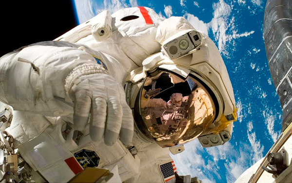
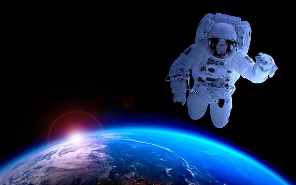

O telescópio espacial James Webb chegou ao seu destino final, quase um mês após o lançamento.
Enquanto o Telescópio Espacial Hubble orbita a Terra, o Webb orbitará o Sol, mas alinhado com a Terra.
Thiago Gonçalves, astrônomo da Universidade Federal do Rio de Janeiro, disse à CNN que o James Webb é “definitivamente um novo olhar sobre o Universo, com a desvantagem de que ele está muito longe.”
O ponto de observação do telescópio está a mais de um milhão de quilômetros da Terra e para além da própria lua.
“É fundamental que o telescópio esteja protegido da região do Sol. Se ele estivesse diretamente exposto, atrapalharia muito as observações. O ponto em que ele está permite que a Terra sirva de escudo de calor”, disse.
Comparado ao Hubble, Gonçalves explica que o novo telescópio é muito maior e tem outras características únicas.
“O James Webb tem instrumentos com tecnologia muito mais moderna em relação ao Hubble, lançado há 30 anos. Além disso, o James Webb observa no infravermelho. Isso quer dizer que ele observa um tipo de radiação diferente, o Hubble observa a luz visível, mesmo tipo de luz que nosso olho pode ver, por exemplo.”
O astrônomo ainda aponta que os cientistas esperam que o novo telescópio possa enxergar radiação cada vez mais distante.
“Ele consegue ver melhor através de nuvens de poeira. As estrelas nascem dentro dessas nuvens, a gente vai conseguir melhor dentro dessas nuvens porque a radiação atravessa melhor. E ao mesmo tempo, o James Webb tem esse objetivo de ver as primeiras galáxias e a luz dessas galáxias, à medida que atravessam o Universo, ela vai se modificando.”
Para Gonçalves, os cientistas esperam que por causa disso, seja um ótimo para ver as galáxias que estão muito distantes.
O cientista explica que tem muita gente que quer estudar a atmosfera de outros planetas em busca de vida. Segundo o astrônomo, é possível que o James Webb consiga observar moléculas com a ajuda do infravermelho.
“A gente não vai ver nenhum alienígena, mas a gente espera ver sinais químicos, ou algum processo químico acontecendo na atmosfera planetas que estão anos-luz de distância.”
O astrônomo disse que a expectativa para o que o telescópio vai descobrir é muito boa.
“Quando há um lançamento de um telescópio assim, a gente não sabe que vai ser capaz de observar”, disse.
Segundo o astrônomo, a duração do James Webb é de cerca de 10 anos, mas há esperança de que ele dure mais tempo. Para ele, “é super interessante pensar no que a gente não pode descobrir e só vamos ficar sabendo nos próximos cinco ou 10 anos”, avalia.
Fonte: CNN.


